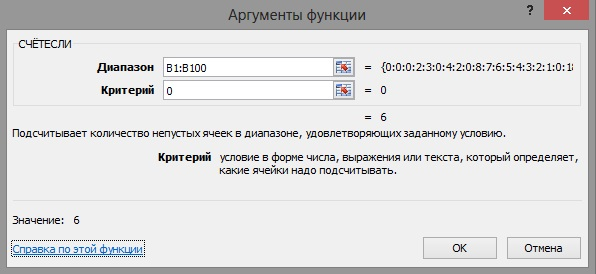
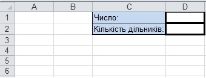
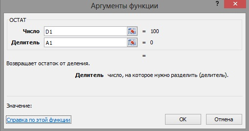
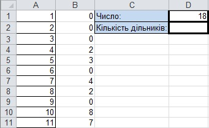

Практична робота 3.2
Розв'яжіть таку математичну задачу: обчислити кількість дільників заданого користувачем числа, яке не перевищує 100. Користувач має вводити число у певну клітинку, а результат повинен автоматично відображатися в іншій клітинці.
Аналіз завдання
Отже, потрібно визначити, на скільки чисел у діапазоні [1;а] введене користувачем число а ділиться без остачі. Замість діапазону [1;а] можна розглядати діапазон [1;100]: очевидно, що серед чисел, більших за а, дільників а не буде. Числа від 1 до 100 можна ввести у діапазоні А1:А100, а в діапазоні В1:В100 – обчислити остачі від ділення а на відповідне число зі стовпця А. Залишиться визначити кількість нулів у діапазоні В1:В100 – вона дорівнюватиме шуканому результату.
Хід виконання
- Створіть таблицю за формою, яка подана на рис. 3.11. Клітинка D1 призначена для введення числа, а клітинка D2 – для відображення результату. Збережіть таблицю у файлі з іменем Практ_3_2.хlsx.
- У діапазоні А1:А100 створіть арифметичну прогресію цілих чисел від 1 до 100 із кроком 1 (згадайте матеріал розділу 1).
- У клітинку В1 уведіть формулу для обчислення остачі від ділення числа, введеного користувачем (клітинка D1), на число у клітинці А1.
- Виділіть клітинку В1 і клацніть кнопку
 (Вставка функції) зліва від рядка формул.
(Вставка функції) зліва від рядка формул. - У вікні Вставка функції з розкривного списку Категорія виберіть категорію Математичні, а у списку Виберіть функцію – функцію MOD (рос. ОСТАТ) і клацніть її двічі.
- У вікні Аргументи функції у поле Число введіть адресу D1 (клацніть у полі Число, а потім – на клітинці D1), а в поле Дільник – адресу А1 (рис. 3.12).
- Клацніть кнопку ОК. У клітинку В1 буде введено формулу =MOD(D1;A1).
- Виділіть клітинку В1 і клацніть кнопку
- Під час копіювання у введеній формулі зміщуватимуться обидві адреси, а нам потрібно, щоб адреса D1 залишалась незмінною. Зафіксуйте номер стовпця у цьому посиланні самостійно (згадайте матеріал розділу 2).
- Скопіюйте формулу з клітинки В1 в усі клітинки діапазону В2:В100. Якщо ввести у клітинку D1 число 18, аркуш набуде такого вигляду, як на рис. 3.13.
- Тепер у клітинці D2 потрібно визначити кількість нулів у діапазоні В1:В100. Для цього скористайтеся функцією СОUNТІF(рос. СЧЕТЕСЛИ).
- Виділіть клітинку D2 і клацніть кнопку (Вставка функції).
- У вікні Вставка функції в розкривному списку Категорія виберіть категорію Статистичні, а у списку Виберіть функцію – функцію СОUNТІF і клацніть її двічі.
- Перейшовши у вікно Аргументи функції, в поле Діапазон введіть адресу В1:В100 (клацніть кнопку а потім виділіть діапазон), а в поле Критерій – число 0 (рис. 3.14).
- Клацніть кнопку ОК, і у клітинці D1 з'явиться формула =СОUNТІF(В1:В100;0) та буде обчислено результат.

Рис. 3.14. Введення аргументів функції СОUNТІF - Виділіть клітинку D2 і клацніть кнопку
- Введіть у клітинку D1 різні значення, щоб перевірити роботу функцій. Зауважте: прості числа мають рівно два дільники. Як ви вважаєте, яке число в діапазоні [0; 100] має найбільшу кількість дільників?

Рис. 3.11. Форма таблиці для обчислення кількості дільників заданого числа
Рис. 3.11. Форма таблиці для обчислення кількості дільників заданого числа

Рис. 3.12. Введення аргументів функції MOD
Рис. 3.12. Введення аргументів функції MOD

Рис. 3.13. Обчислення дільників числа
Рис. 3.13. Обчислення дільників числа